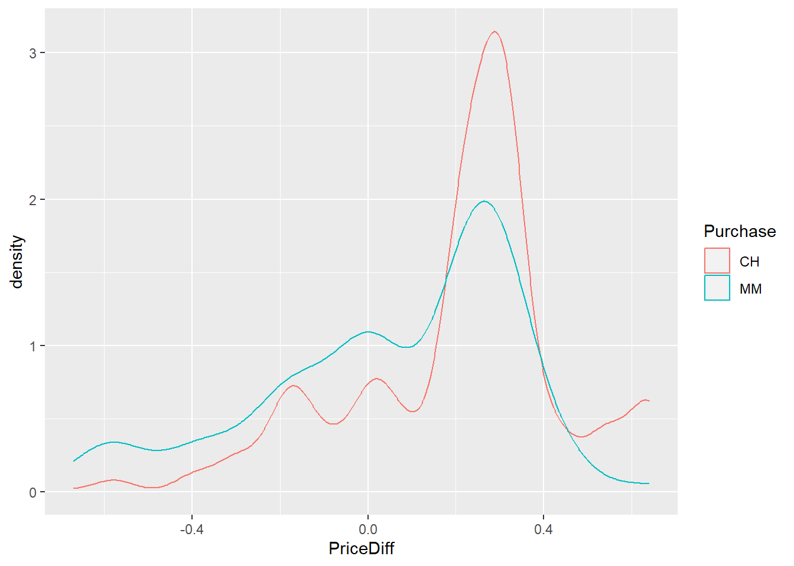
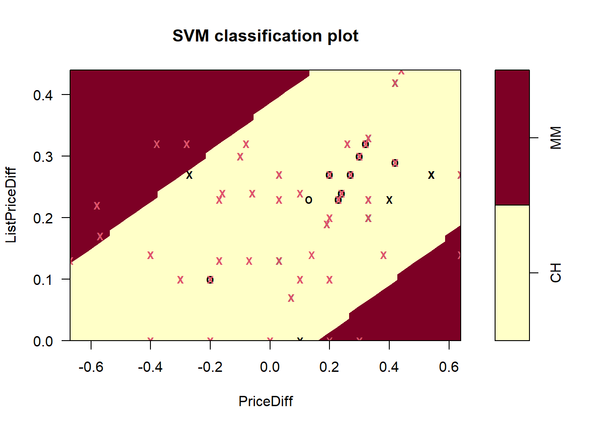
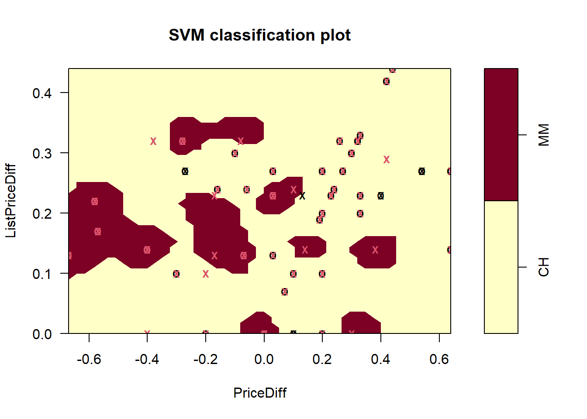

2 Exercise 1: Orange juice dataset
The OJ data from the ISLR package contains 1070 purchases where the customer either purchased Citrus Hill or Minute Maid Orange Juice. A number of characteristics of the customer and product are recorded.
Purchase: A factor with levels CH and MM indicating whether the customer purchased Citrus Hill or Minute Maid Orange Juice (i.e. response/class)WeekofPurchase: Week of purchaseStoreID: Store IDPriceCH: Price charged for CHPriceMM: Price charged for MMDiscCH: Discount offered for CHDiscMM: Discount offered for MMSpecialCH: Indicator of special on CHSpecialMM: Indicator of special on MMLoyalCH: Customer brand loyalty for CHSalePriceMM:Sale price for MMSalePriceCH: Sale price for CHPriceDiff: Sale price of MM less sale price of CHStore7: A factor with levels No and Yes indicating whether the sale is at Store 7PctDiscMM: Percentage discount for MMPctDiscCH: Percentage discount for CHListPriceDiff: List price of MM less list price of CHSTORE: Which of 5 possible stores the sale occured at
The question of interest is to predict which brand of orange juice a customer will purchase (Purchase variable).
Source: Stine, Robert A., Foster, Dean P., Waterman, Richard P. Business Analysis Using Regression (1998). Published by Springer.
To load the data, use
library(ISLR)
data(OJ)2.1 Exploratory data analysis
In R, categorical variables are sometimes recorded as numerical variables, which is inappropriate for subsequent analysis. To address this, as.factor() should be used to convert these variables back into categorical variables.
Task
- Use
str,summaryand/orskimto inspect the data.
- Looking at the variable description above, is there any categorical variable encoded incorrectly as numerical variable? If so, correct them by using
as.factor().
Excluding the response variable Purchase, how many variables are numerical variables and how many variables are categorical variables?
- The number of numerical variables = .
- The number of categorical variables = .
library(skimr)
str(OJ)## 'data.frame': 1070 obs. of 18 variables:
## $ Purchase : Factor w/ 2 levels "CH","MM": 1 1 1 2 1 1 1 1 1 1 ...
## $ WeekofPurchase: num 237 239 245 227 228 230 232 234 235 238 ...
## $ StoreID : num 1 1 1 1 7 7 7 7 7 7 ...
## $ PriceCH : num 1.75 1.75 1.86 1.69 1.69 1.69 1.69 1.75 1.75 1.75 ...
## $ PriceMM : num 1.99 1.99 2.09 1.69 1.69 1.99 1.99 1.99 1.99 1.99 ...
## $ DiscCH : num 0 0 0.17 0 0 0 0 0 0 0 ...
## $ DiscMM : num 0 0.3 0 0 0 0 0.4 0.4 0.4 0.4 ...
## $ SpecialCH : num 0 0 0 0 0 0 1 1 0 0 ...
## $ SpecialMM : num 0 1 0 0 0 1 1 0 0 0 ...
## $ LoyalCH : num 0.5 0.6 0.68 0.4 0.957 ...
## $ SalePriceMM : num 1.99 1.69 2.09 1.69 1.69 1.99 1.59 1.59 1.59 1.59 ...
## $ SalePriceCH : num 1.75 1.75 1.69 1.69 1.69 1.69 1.69 1.75 1.75 1.75 ...
## $ PriceDiff : num 0.24 -0.06 0.4 0 0 0.3 -0.1 -0.16 -0.16 -0.16 ...
## $ Store7 : Factor w/ 2 levels "No","Yes": 1 1 1 1 2 2 2 2 2 2 ...
## $ PctDiscMM : num 0 0.151 0 0 0 ...
## $ PctDiscCH : num 0 0 0.0914 0 0 ...
## $ ListPriceDiff : num 0.24 0.24 0.23 0 0 0.3 0.3 0.24 0.24 0.24 ...
## $ STORE : num 1 1 1 1 0 0 0 0 0 0 ...skim(OJ)| Name | OJ |
| Number of rows | 1070 |
| Number of columns | 18 |
| _______________________ | |
| Column type frequency: | |
| factor | 2 |
| numeric | 16 |
| ________________________ | |
| Group variables | None |
Variable type: factor
| skim_variable | n_missing | complete_rate | ordered | n_unique | top_counts |
|---|---|---|---|---|---|
| Purchase | 0 | 1 | FALSE | 2 | CH: 653, MM: 417 |
| Store7 | 0 | 1 | FALSE | 2 | No: 714, Yes: 356 |
Variable type: numeric
| skim_variable | n_missing | complete_rate | mean | sd | p0 | p25 | p50 | p75 | p100 | hist |
|---|---|---|---|---|---|---|---|---|---|---|
| WeekofPurchase | 0 | 1 | 254.38 | 15.56 | 227.00 | 240.00 | 257.00 | 268.00 | 278.00 | ▆▅▅▇▇ |
| StoreID | 0 | 1 | 3.96 | 2.31 | 1.00 | 2.00 | 3.00 | 7.00 | 7.00 | ▇▅▃▁▇ |
| PriceCH | 0 | 1 | 1.87 | 0.10 | 1.69 | 1.79 | 1.86 | 1.99 | 2.09 | ▅▂▇▆▁ |
| PriceMM | 0 | 1 | 2.09 | 0.13 | 1.69 | 1.99 | 2.09 | 2.18 | 2.29 | ▂▁▃▇▆ |
| DiscCH | 0 | 1 | 0.05 | 0.12 | 0.00 | 0.00 | 0.00 | 0.00 | 0.50 | ▇▁▁▁▁ |
| DiscMM | 0 | 1 | 0.12 | 0.21 | 0.00 | 0.00 | 0.00 | 0.23 | 0.80 | ▇▁▂▁▁ |
| SpecialCH | 0 | 1 | 0.15 | 0.35 | 0.00 | 0.00 | 0.00 | 0.00 | 1.00 | ▇▁▁▁▂ |
| SpecialMM | 0 | 1 | 0.16 | 0.37 | 0.00 | 0.00 | 0.00 | 0.00 | 1.00 | ▇▁▁▁▂ |
| LoyalCH | 0 | 1 | 0.57 | 0.31 | 0.00 | 0.33 | 0.60 | 0.85 | 1.00 | ▅▃▆▆▇ |
| SalePriceMM | 0 | 1 | 1.96 | 0.25 | 1.19 | 1.69 | 2.09 | 2.13 | 2.29 | ▁▂▂▂▇ |
| SalePriceCH | 0 | 1 | 1.82 | 0.14 | 1.39 | 1.75 | 1.86 | 1.89 | 2.09 | ▂▁▇▇▅ |
| PriceDiff | 0 | 1 | 0.15 | 0.27 | -0.67 | 0.00 | 0.23 | 0.32 | 0.64 | ▁▂▃▇▂ |
| PctDiscMM | 0 | 1 | 0.06 | 0.10 | 0.00 | 0.00 | 0.00 | 0.11 | 0.40 | ▇▁▂▁▁ |
| PctDiscCH | 0 | 1 | 0.03 | 0.06 | 0.00 | 0.00 | 0.00 | 0.00 | 0.25 | ▇▁▁▁▁ |
| ListPriceDiff | 0 | 1 | 0.22 | 0.11 | 0.00 | 0.14 | 0.24 | 0.30 | 0.44 | ▂▃▆▇▁ |
| STORE | 0 | 1 | 1.63 | 1.43 | 0.00 | 0.00 | 2.00 | 3.00 | 4.00 | ▇▃▅▅▃ |
OJ$StoreID <- as.factor(OJ$StoreID)
OJ$SpecialCH <- as.factor(OJ$SpecialCH)
OJ$SpecialMM <- as.factor(OJ$SpecialMM)
OJ$STORE <- as.factor(OJ$STORE)
str(OJ)## 'data.frame': 1070 obs. of 18 variables:
## $ Purchase : Factor w/ 2 levels "CH","MM": 1 1 1 2 1 1 1 1 1 1 ...
## $ WeekofPurchase: num 237 239 245 227 228 230 232 234 235 238 ...
## $ StoreID : Factor w/ 5 levels "1","2","3","4",..: 1 1 1 1 5 5 5 5 5 5 ...
## $ PriceCH : num 1.75 1.75 1.86 1.69 1.69 1.69 1.69 1.75 1.75 1.75 ...
## $ PriceMM : num 1.99 1.99 2.09 1.69 1.69 1.99 1.99 1.99 1.99 1.99 ...
## $ DiscCH : num 0 0 0.17 0 0 0 0 0 0 0 ...
## $ DiscMM : num 0 0.3 0 0 0 0 0.4 0.4 0.4 0.4 ...
## $ SpecialCH : Factor w/ 2 levels "0","1": 1 1 1 1 1 1 2 2 1 1 ...
## $ SpecialMM : Factor w/ 2 levels "0","1": 1 2 1 1 1 2 2 1 1 1 ...
## $ LoyalCH : num 0.5 0.6 0.68 0.4 0.957 ...
## $ SalePriceMM : num 1.99 1.69 2.09 1.69 1.69 1.99 1.59 1.59 1.59 1.59 ...
## $ SalePriceCH : num 1.75 1.75 1.69 1.69 1.69 1.69 1.69 1.75 1.75 1.75 ...
## $ PriceDiff : num 0.24 -0.06 0.4 0 0 0.3 -0.1 -0.16 -0.16 -0.16 ...
## $ Store7 : Factor w/ 2 levels "No","Yes": 1 1 1 1 2 2 2 2 2 2 ...
## $ PctDiscMM : num 0 0.151 0 0 0 ...
## $ PctDiscCH : num 0 0 0.0914 0 0 ...
## $ ListPriceDiff : num 0.24 0.24 0.23 0 0 0.3 0.3 0.24 0.24 0.24 ...
## $ STORE : Factor w/ 5 levels "0","1","2","3",..: 2 2 2 2 1 1 1 1 1 1 ...skim(OJ)| Name | OJ |
| Number of rows | 1070 |
| Number of columns | 18 |
| _______________________ | |
| Column type frequency: | |
| factor | 6 |
| numeric | 12 |
| ________________________ | |
| Group variables | None |
Variable type: factor
| skim_variable | n_missing | complete_rate | ordered | n_unique | top_counts |
|---|---|---|---|---|---|
| Purchase | 0 | 1 | FALSE | 2 | CH: 653, MM: 417 |
| StoreID | 0 | 1 | FALSE | 5 | 7: 356, 2: 222, 3: 196, 1: 157 |
| SpecialCH | 0 | 1 | FALSE | 2 | 0: 912, 1: 158 |
| SpecialMM | 0 | 1 | FALSE | 2 | 0: 897, 1: 173 |
| Store7 | 0 | 1 | FALSE | 2 | No: 714, Yes: 356 |
| STORE | 0 | 1 | FALSE | 5 | 0: 356, 2: 222, 3: 196, 1: 157 |
Variable type: numeric
| skim_variable | n_missing | complete_rate | mean | sd | p0 | p25 | p50 | p75 | p100 | hist |
|---|---|---|---|---|---|---|---|---|---|---|
| WeekofPurchase | 0 | 1 | 254.38 | 15.56 | 227.00 | 240.00 | 257.00 | 268.00 | 278.00 | ▆▅▅▇▇ |
| PriceCH | 0 | 1 | 1.87 | 0.10 | 1.69 | 1.79 | 1.86 | 1.99 | 2.09 | ▅▂▇▆▁ |
| PriceMM | 0 | 1 | 2.09 | 0.13 | 1.69 | 1.99 | 2.09 | 2.18 | 2.29 | ▂▁▃▇▆ |
| DiscCH | 0 | 1 | 0.05 | 0.12 | 0.00 | 0.00 | 0.00 | 0.00 | 0.50 | ▇▁▁▁▁ |
| DiscMM | 0 | 1 | 0.12 | 0.21 | 0.00 | 0.00 | 0.00 | 0.23 | 0.80 | ▇▁▂▁▁ |
| LoyalCH | 0 | 1 | 0.57 | 0.31 | 0.00 | 0.33 | 0.60 | 0.85 | 1.00 | ▅▃▆▆▇ |
| SalePriceMM | 0 | 1 | 1.96 | 0.25 | 1.19 | 1.69 | 2.09 | 2.13 | 2.29 | ▁▂▂▂▇ |
| SalePriceCH | 0 | 1 | 1.82 | 0.14 | 1.39 | 1.75 | 1.86 | 1.89 | 2.09 | ▂▁▇▇▅ |
| PriceDiff | 0 | 1 | 0.15 | 0.27 | -0.67 | 0.00 | 0.23 | 0.32 | 0.64 | ▁▂▃▇▂ |
| PctDiscMM | 0 | 1 | 0.06 | 0.10 | 0.00 | 0.00 | 0.00 | 0.11 | 0.40 | ▇▁▂▁▁ |
| PctDiscCH | 0 | 1 | 0.03 | 0.06 | 0.00 | 0.00 | 0.00 | 0.00 | 0.25 | ▇▁▁▁▁ |
| ListPriceDiff | 0 | 1 | 0.22 | 0.11 | 0.00 | 0.14 | 0.24 | 0.30 | 0.44 | ▂▃▆▇▁ |
- How many observations are there in the CH class and MM class
- Use
ggplotorggpairsto visualise numerical variables, answering questions such as which variables may be useful in predicting the type of orange juice purchased by the customer, any outlier/extreme observations.
Check Lab 3 Sections 2.1 and 3.2 for examples.
Below is an example code examining PriceDiff and ListPriceDiff using density plots and boxplots.
library(ggplot2)
ggplot(OJ, aes(x=PriceDiff, colour=Purchase)) +
geom_density()
ggplot(OJ, aes(x=PriceDiff, colour=Purchase)) +
geom_boxplot()library(GGally)
ggpairs(OJ, columns=c(13,17), ggplot2::aes(colour=Purchase, alpha=0.2))- Produce barcharts of categorical variables separated by groups.
Below is an example code examining SpecialCH using barchart.
ggplot(OJ, aes(x=SpecialCH, fill=Purchase)) +
geom_bar()2.2 Effect of different parameters in SVM
Before building a powerful SVM classifier, we illustrate the effect of different kernels and/or different parameters in SVM by working with only two numeric variables (hence we could visualise the decision boundary in 2D).
Suppose we select PriceDiff and ListPriceDiff as the predictor variables.
Task
- Build a support vector classifier, i.e. SVM with a linear kernel, and visualise the decision boundary.
library(e1071)
Model_linear <- svm(Purchase~PriceDiff+ListPriceDiff, OJ, type="C-classification", kernel="linear")
plot(Model_linear, OJ, ListPriceDiff~PriceDiff)- Build an SVM with a polynomial kernel with two different degrees (by using the argument
degree) and two intercept coefficients (by using the argumentcoef).
The decision boundary will be if the degree in the polynomial kernel is higher.
Model_poly <- svm(Purchase~PriceDiff+ListPriceDiff, OJ, type="C-classification", kernel="polynomial", degree=2)
plot(Model_poly, OJ, ListPriceDiff~PriceDiff)
Model_poly2 <- svm(Purchase~PriceDiff+ListPriceDiff, OJ, type="C-classification", kernel="polynomial", degree=4)
plot(Model_poly2, OJ, ListPriceDiff~PriceDiff)Model_poly3 <- svm(Purchase~PriceDiff+ListPriceDiff, OJ, type="C-classification", kernel="polynomial", degree=4, coef=2)
plot(Model_poly3, OJ, ListPriceDiff~PriceDiff)- Now fix the degree and intercepts in the polynomial kernel and change the cost parameter for soft-margin SVM (by using the argument
cost). Visualise the decision boundary for two different cost values.
Model_poly4 <- svm(Purchase~PriceDiff+ListPriceDiff, OJ, type="C-classification", kernel="polynomial", degree=5, cost=0.01)
plot(Model_poly4, OJ, ListPriceDiff~PriceDiff)Model_poly5 <- svm(Purchase~PriceDiff+ListPriceDiff, OJ, type="C-classification", kernel="polynomial", degree=5, cost=10)
plot(Model_poly5, OJ, ListPriceDiff~PriceDiff)- Build an SVM with a radial basis function (RBF) kernel with two different gamma values (using the argument
gamma) and visualise the decision boundary.
The decision boundary will be if gamma in the RBF kernel is larger.
Model_RBF <- svm(Purchase~PriceDiff+ListPriceDiff, OJ, type="C-classification", kernel="radial", gamma=0.1)
plot(Model_RBF, OJ, ListPriceDiff~PriceDiff)Model_RBF2 <- svm(Purchase~PriceDiff+ListPriceDiff, OJ, type="C-classification", kernel="radial", degree=10)
plot(Model_RBF2, OJ, ListPriceDiff~PriceDiff)
2.3 Build an SVM
Now we start to build an SVM. The first step is to split the data into training and test sets for training and evaluating the classifier; the validation set is skipped here as we will use the default tuning method on the training set.
Task
- Split the dataset into 75% for training and 25% for testing.
set.seed(1)
n <- nrow(OJ)
train.idx <- sample(n, round(n*0.75))
train <- OJ[train.idx,]
test <- OJ[-train.idx]SVM is scale-invariant and therefore it is important to standardise the data first; here, standardisation is only applied to numerical variables.
numerical_vars <- sapply(OJ,is.numeric) #identify numerical variables
OJ[,numerical_vars] <- apply(OJ[,numerical_vars],2,scale)Our initial exploratory analysis suggests that it is unlikely to separate the class by using a linear decision boundary. Therefore, we focus on polynomial kernel and RBF kernel for our subsequent analysis.
- Use
tuneortune.svmto select the optimal combinations ofcostanddegreefor polynomial kernel andcostandgammafor the RBF kernel.
set.seed(1)
cost_range <- c(0.01,0.1,1,10,100)
degree_range <- 2:5
gamma_range <- c(0.001,0.01,0.1,1,10,100)
SVM_poly <- tune.svm(Purchase~., data=train, type="C-classification", kernel="polynomial", cost=cost_range, degree=degree_range)
summary(SVM_poly)##
## Parameter tuning of 'svm':
##
## - sampling method: 10-fold cross validation
##
## - best parameters:
## degree cost
## 2 10
##
## - best performance: 0.1820525
##
## - Detailed performance results:
## degree cost error dispersion
## 1 2 1e-02 0.3926852 0.05677485
## 2 3 1e-02 0.3926852 0.05677485
## 3 4 1e-02 0.3802469 0.05323575
## 4 5 1e-02 0.3715432 0.05489188
## 5 2 1e-01 0.3578241 0.05891847
## 6 3 1e-01 0.3490586 0.05982537
## 7 4 1e-01 0.3540741 0.06120994
## 8 5 1e-01 0.3528549 0.06050438
## 9 2 1e+00 0.2168827 0.05060192
## 10 3 1e+00 0.2355864 0.04716656
## 11 4 1e+00 0.2854321 0.06236839
## 12 5 1e+00 0.3178858 0.06676980
## 13 2 1e+01 0.1820525 0.04417697
## 14 3 1e+01 0.1920525 0.03412687
## 15 4 1e+01 0.2269136 0.04978096
## 16 5 1e+01 0.2430864 0.04092613
## 17 2 1e+02 0.1907562 0.04112418
## 18 3 1e+02 0.1895988 0.03886508
## 19 4 1e+02 0.2119599 0.03426569
## 20 5 1e+02 0.2157099 0.03719672SVM_RBF <- tune.svm(Purchase~., data=train, type="C-classification", kernel="radial", cost=cost_range, gamma=gamma_range)
summary(SVM_RBF)##
## Parameter tuning of 'svm':
##
## - sampling method: 10-fold cross validation
##
## - best parameters:
## gamma cost
## 0.001 10
##
## - best performance: 0.1745062
##
## - Detailed performance results:
## gamma cost error dispersion
## 1 1e-03 1e-02 0.3927623 0.06349114
## 2 1e-02 1e-02 0.3927623 0.06349114
## 3 1e-01 1e-02 0.3927623 0.06349114
## 4 1e+00 1e-02 0.3927623 0.06349114
## 5 1e+01 1e-02 0.3927623 0.06349114
## 6 1e+02 1e-02 0.3927623 0.06349114
## 7 1e-03 1e-01 0.3927623 0.06349114
## 8 1e-02 1e-01 0.2044599 0.04921463
## 9 1e-01 1e-01 0.1919444 0.03952223
## 10 1e+00 1e-01 0.3529012 0.06995612
## 11 1e+01 1e-01 0.3927623 0.06349114
## 12 1e+02 1e-01 0.3927623 0.06349114
## 13 1e-03 1e+00 0.1895062 0.04389485
## 14 1e-02 1e+00 0.1820216 0.04704146
## 15 1e-01 1e+00 0.1870679 0.04500966
## 16 1e+00 1e+00 0.2331173 0.03865659
## 17 1e+01 1e+00 0.2617593 0.05374654
## 18 1e+02 1e+00 0.3155247 0.03780232
## 19 1e-03 1e+01 0.1745062 0.04930779
## 20 1e-02 1e+01 0.1882407 0.05452198
## 21 1e-01 1e+01 0.2119599 0.03810401
## 22 1e+00 1e+01 0.2355556 0.05041878
## 23 1e+01 1e+01 0.2805401 0.03810152
## 24 1e+02 1e+01 0.3167901 0.03892098
## 25 1e-03 1e+02 0.1807407 0.06071558
## 26 1e-02 1e+02 0.1920216 0.04416859
## 27 1e-01 1e+02 0.2169136 0.04579364
## 28 1e+00 1e+02 0.2542747 0.04541986
## 29 1e+01 1e+02 0.2867747 0.03358065
## 30 1e+02 1e+02 0.3167901 0.03892098The best optimal parameter for SVM with a polynomial kernel is using a degree of 2 and a cost parameter of 10, achieving the best performance of 0.1820525 (error rate from 10-fold cross-validation). The best optimal parameter for SVM with an RBF kernel is using gamma of 0.001 and a cost parameter of 10, achieving the best performance of 0.1745062; note that this gamma value is obtained at the minimum of the range and thus it is preferable to further reduce gamma and check if the performance can be further improved.
Based on the above R output, we see that the cross-validation error rate for SVM using the RBF kernel is slightly better than using the polynomial kernel. Therefore we will proceed with RBF kernel.
- Build an SVM using the optimal kernel and parameters found in the above question and report the performance on test set.
gamma <- SVM_RBF$best.parameters[1]
cost <- SVM_RBF$best.parameters[2]
SVM_final <- svm(Purchase~PriceDiff+ListPriceDiff, OJ, type="C-classification", kernel="radial", degree=10)
# summary(SVM_RBF)